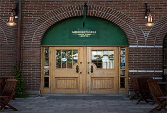

Trondhjems Mikrobryggeri

Trondhjem Mikrobryggeri åpnet sine dører for første gang 4. desember 1998 og var derved den andre Bryggeripuben som ble etablert i Scandinavia.
Det å brygge øl i små mengder, for så å servere det i tilhørende pub er et fenomen som de siste 15-20 årene har spredd seg til alle verdensdeler. Ølelskere over hele verden har drukket seg lei på at de store industribryggeriene med sine strenge profittkrav er tvunget til å stadig kutte tilbake på kvaliteten og mengden av de ingredienser som gir ølet sin gode smak – humle og malt.
Mikrobryggerier har derimot lite å hente på i spare et par kroner på en liter øl hvis konsekvensen er å brygge øl av ringere kvalitet. Idéen bak et mikrobryggeri er jo nettopp å brygge et stort spekter av smakfulle øltyper av høyeste kvalitet.
I tråd med denne filosofien bruker Trondhjem Mikrobryggeri kun de beste råvarer. Vi får malten fra de samme skotske bøndene som leverer malt til Skottlands kjente maltwhisky destillerier. Humlen kjøper vi fra de mest anerkjente humlegårdene i Tsjekkia, Tyskland, England, New Zeland og USA.
Åpningstider:
Mandag 17.11.2014 15:00 - 24:00
Tirsdag 18.11.2014 15:00 - 02:00
Onsdag 19.11.2014 15:00 - 02:00
Torsdag 20.11.2014 15:00 - 02:00
Fredag 21.11.2014 15:00 - 02:00
Lørdag 22.11.2014 12:00 - 02:00
Søndag 23.11.2014 Stengt